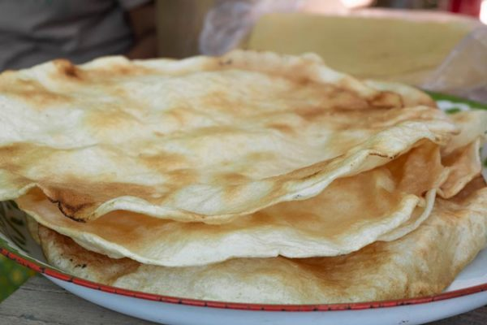

1.) ข้าวโป่ง
ส่วนผสม
- ข้าวเหนียวสุก (ข้าวใหม่)
- น้ำตาลทราย
- ไข่ไก่ต้มสุก
- น้ำมันหมู
- งาดำ
วิธีทำ
- นำข้าวเหนียวสุกใส่ครกกระเดื่องตำให้ละเอียด ผสมน้ำตาลทราย และงาดำ ตำต่อไปจนข้าวเหนียวสุกผสมกับน้ำตาลเป็นเนื้อเดียวกัน พักไว้
- นำไข่ไก่ต้มสุกเลือกเฉพาะไข่แดงผสมกับน้ำมันหมูเป็นเนื้อเดียวกัน นำไปทาบาง ๆ บนแผ่นพลาสติก นำแป้งจากข้อ 1 ปั้นเป็นลูกกลม ๆ ประมาณไข่ไก่ วางลงบนแผ่นพลาสติกแล้วใช้ไม้รีดให้เป็นแผ่นบาง ๆ มน ๆ แล้วลอกออกจากแผ่นพลาสติก นำไปผึ่งแดดประมาณ 1 วัน สามารถเก็บไว้รับประทานได้ 3 สัปดาห์
- ย่างด้วยไฟอ่อน ๆ แป้งข้าวโป่งจะค่อย ๆ พองออก ลักษณะสีน้ำตาลอ่อนผสมสีขาว ให้รสชาติหอมหวาน
2.) ข้ามต้มมัด
ส่วนผสม
- ข้าวเหนียว(ใช้ข้าวเหนียวเก่า หรือข้าวเหนียวเขี้ยวงู) ½ กก.
- หัวกะทิ ½ กก.
- หางกะทิ 1 กก.
- น้ำตาลทราย ½ กก.
- เกลือ ½ ชต.
- กล้วยน้ำว้าฝานครึ่งลูกสำหรับเป็นไส้ขนม
- ถั่วดำต้มสุก 2 ถ้วย
- ใบตองสำหรับห่อ
- ตอกสำหรับมัดห่อข้าวต้มมัด(แช่น้ำไว้ประมาณ 1 ชม.)
วิธีทำ
- ข้าวเหนียวแช่น้ำไว้ ประมาณ 2-3 ชม.
- ตั้งกระทะสำหรับกวนข้าวเหนียวเทหางกะทิทั้งหมดลงไปใส่ข้าวเหนียว เกลือ และน้ำตาลประมาณ 1 ใน 3 ลงไปค่อยๆ กวนระวังอย่าให้ไหม้นะค่ะ
- กวนจนเริ่มแห้งค่อยๆใส่หัวกะทิลงไปและน้ำตาลทรายที่เหลือ กวนจนเม็ดข้าวเหนียวเริ่มบาน แต่ตรงกลางข้างในยังเป็นไตอยู่ ยกลงพักให้เย็น
- ตักข้าวเหนียวประมาณ 1 ½ ชต.เกลี่ยใส่ในใบตองที่ตัดเตรียมไว้สำหรับห่อ วางกล้วยลงไปตรงกลาง จากนั้นนำข้าวเหนียวมาห่อปิดกล้วยไว้ วางถั่วดำต้มลงไป
- จัดการห่อข้าวต้มมัด แล้วนำข้าวต้มมัดสองอันมาประกบเข้าด้วยกัน มัดด้วยตอก 2 เปลาะ
- นึ่งให้สุกประมาณ 1 ½ ชม.
3.) ขนมกระยาสารท
ส่วนผสม
- น้ำตาลอ้อยหรือน้ำตาลมะพร้าว 1 ถ้วยตวง
- หัวกะทิ 1 ถ้วยตวง
- แบะแซ 1 ช้อนโต๊ะ
- ข้าวเม่าราง 1 1/2 ถ้วยตวง
- ข้าวตอกคั่วกรอบ 1 1/2 ถ้วยตวง
- งาขาวหรือดำคั่ว 1 1/2 ถ้วยตวง
- ถั่วลิสงคั่ว 1/2 ถ้วยตวง
วิธีทำ
- เคี่ยวน้ำตาลกับหัวกะทิด้วยไฟกลางค่อนข้างอ่อนจนเป็นยางมะตูม ใส่แบะเซ คนให้เข้ากัน ยกลงพักไว้
- ผสมของที่คั่วทั้งหมดคนให้เข้ากันดี ใส่ลงในน้ำตาลที่เครี่ยวไว้คนให้เข้ากัน
- ปั้นเป็นก้อนกลม ๆ ขนาดเส้นผ่าศูนย์กลาง 2 เซนติเมตร หรือจะเทใส่ถาดเกลี่ยให้แบน เย็นแล้วตัดเป็นชิ้นสี่เหลี่ยมก็ได้
4.) ขนมมะพร้าวแก้ว
ส่วนผสม
- มะพร้าวขูดเป็นเส้นๆ 3 ถ้วยตวง
- น้ำตาลทราย 1 ถ้วยตวง
- น้ำลอยดอกมะลิ 1/2 ถ้วยตวง (หรือน้ำเปล่า)
- เกลือป่น 1/2 ช้อนชา
- สีผสมอาหาร (แล้วแต่สีที่ชอบ)
วิธีทำ
- ผสมน้ำเปล่าและน้ำตาลทรายลงในกระทะทองเหลือง นำไปตั้งบนไฟอ่อนจนละลาย ใส่เกลือลงไป เคี่ยวต่อจนเหนียวเป็นยางมะตูม แล้วจึงเติมสีผสมอาหารลงไป (ถ้าต้องการหลายสี ให้แบ่งน้ำเชื่อมออกมาเป็นส่วนๆ ตามจำนวนสีที่ต้องการ)
- เมื่อเตรียมน้ำเชื่อมเสร็จแล้ว ใส่มะพร้าวขูดลงไปเชื่อม คนให้ทั่วเพื่อให้น้ำตาลจับมะพร้าวให้ทั่วทั้งเส้น เชื่อมจนน้ำงวดลงจึงปิดไฟ
- ตักมะพร้าวเชื่อมออกมาวางบนถาด ใช้ช้อนจัดแต่งรูปทรงให้เป็นลักษณะก้อนกลมขนาดพอๆกัน (ต้องทำให้เสร็จก่อนน้ำเชื่อมแห้ง) เมื่อทำเสร็จ ให้นำไปผึ่งแดดจนแห้ง
- จัดใส่จานเสริฟหรือใส่ภาชนะมิดชิดเพื่อเก็บไว้รับประทานภายหลังได้
5.) ขนมกาละแม
ส่วนผสม
- แป้งข้าวเหนียว 1 ถ้วยตวง
- น้ำกะทิ 5 ถ้วยตวง
- น้ำตาลโตนด 1 1/2 ถ้วยตวง
- น้ำมันพืช 1/4 ถ้วยตวง
วิธีทำ
- นำกะทิไปตั้งในกระทะทองเหลืองบนไฟปานกลาง/li>
- ใส่น้ำตาล แป้งข้าวเหนียว และแป้งท้าวยายม่อมลงไป
- กวนส่วนผสมจนงวด เหนียว เทใส่ถาดแบบหรือภาชนะ ที่เตรียมไว้ พักไว้ให้เย็น
- นำน้ำมันทาผิวบางๆ เพื่อให้เงาสวย จากนั้นใช้มีดตัด เป็นชิ้นตามต้องการ